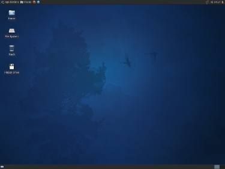
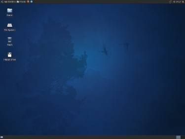

¿Qué es Xubuntu?
Xubuntu es un sistema operativo desarrollado por la comunidad que está bien adaptado para los ordenadores portátiles y de sobremesa. Tanto si lo usa en su casa, en la escuela o en el trabajo Xubuntu contiene todas las aplicaciones que puedas necesitar, desde procesador de texto y aplicaciones de correo electrónico, al software de servidor web y herramientas de programación.
 
Xubuntu es y será siempre gratuito. Usted no paga los honorarios de licencia. Usted puede descargar, utilizar y compartir Xubuntu con tus amigos, familia, escuela o negocio por absolutamente nada.
Emitimos una nueva versión de Xubuntu cada seis meses. Eso significa que usted tendrá siempre la mejor y más aplicaciones que el mundo del código abierto tiene para ofrecer.
Xubuntu está diseñado pensando en la seguridad. Usted recibe actualizaciones de seguridad gratuitas por lo menos durante 18 meses y con el apoyo a largo plazo (LTS) versión que conseguir el apoyo de tres años. No hay cargo extra para la versión LTS, hacemos nuestro mejor trabajo a disposición de todos en los mismos términos de libertad. Las actualizaciones a nuevas versiones de Xubuntu es y será siempre gratuito.
Todo lo que necesita viene en un CD, proporcionando un entorno completo de trabajo. Software adicional disponible en línea.
El instalador gráfico le permite empezar a trabajar rápida y fácilmente. Una instalación estándar debe tener menos de 25 minutos.
Una vez instalado el sistema está inmediatamente listo para usar. Ponemos a su disposición un sistema de escritorio que incluye un conjunto completo de productividad, Internet, dibujo y aplicaciones gráficas y juegos.
Personalizable
Es fácil de personalizar Xubuntu para que coincida con sus gustos personales. Que se necesita, pero unos pocos clics para cambiar el tema, la cantidad y ubicación de los paneles, la fuente, y mucho más. Instalar los plugins del panel y más aplicaciones para la funcionalidad adicional mediante el Centro de Software. La búsqueda de software es muy sencillo y su instalación es tan sólo un clic de distancia. Una vez que las aplicaciones se instalan, las actualizaciones pueden ser descargadas e instaladas de forma automática.
Lanzamientos Frecuentes
Una nueva versión de Xubuntu se lanza cada seis meses, uno de cada cuatro de los cuales es una versión de soporte de largo plazo, lo que significa que usted es elegible para actualizaciones de seguridad de tres años, frente a la no muy mal, ya sea dieciocho meses que se obtiene con las versiones normales.
Comunidad Vibrante
Una vibrante comunidad que existe detrás del proyecto Xubuntu, asegurándose de que siempre hay un montón de personas reales que están disponibles todos dispuestos a ayudar.
Aplicaciones Claves
Xubuntu viene con el galardonado, extensible Firefox navegador web, el peso ligero, pero rico en características Abiword para todas sus necesidades de procesamiento de textos, y Gnumeric para la creación y manipulación de las hojas de cálculo. Tanto Gnumeric y Abiword es compatible con sus respectivos formatos de archivo populares.